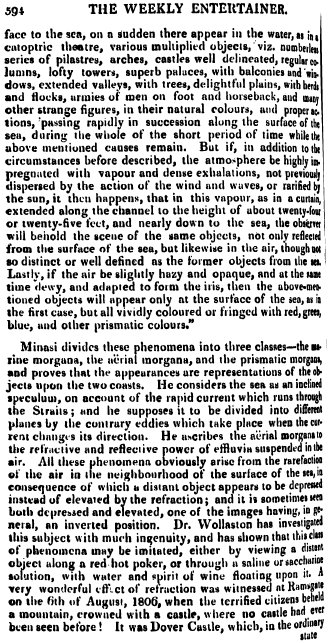
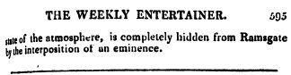
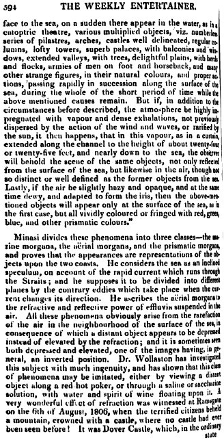
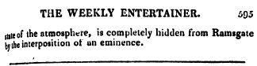
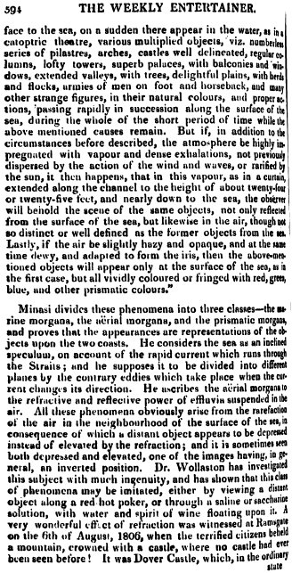
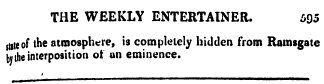
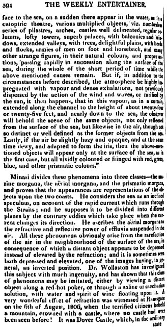
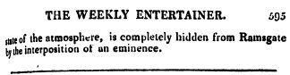

 
 
 
 
On the 27th of August, 1814, while the Majestic, Captain Hayes, was cruising off Boston, a strange figure was perceived in the eastern horizon, about two o'clock in the morning, which, as the sun rose, gradually became more distinguishable; and at length assumed the perfect appearance of a man, dressed in a short jacket and half-boots, with a staff in his hand, at the top of which was a color hanging over his head, marked with two lines, perpendicularly drawn at equal distances, and strongly resembling the French flag. The figure continued visible as long as the rays of the sun would permit it to be looked at. One the 28th, the figure displayed itself in the same posture, but rather broken. On the following morning it seemed entirely disjointed, and faded into shadow, until at last nothing more could be seen than three marks on the sun's disk. Captain Hayes, his officers, and about two hundred of the crew, witnessed the spectacle, both with the naked eye, and through glasses. In superstitious times, such a phenomenon would have been construed into a providential warning, or ominous token of some unexpected event: it may, however, be easily accounted for by the reflective power of the atmosphere, which is well known to be wonderful. Most probable the figure presented was some one ashore, or on the deck of the Majestic.
We subjoin the following explanation of this optical phenomenon from "The Edinburg Encyclopedia." The article is taken from an Essay, published some ago, by Antonia Minasi, an Italian, and is allowed to be the most correct description that has hitherto appeared. The fata morgana, as the phenomenon is termed, was three times observed by Minasi in the Straits of Messina, where it has frequently shown itself:—
"When the rising sun (say Minasi) shines from that point whence its incident ray forms an angle of about 45° on the sea of Reggio, and the bright surface of the water is not disturbed either by the wind or the current, the spectator being placed on an eminence of the city, with his back to the sun, and his face to the sea, on a sudden there appear in the water, as in a catoptric theatre, various multiplied objects, viz., numberless series of pilastres, arches, castles well delineated, regular columns, loftly towers, superb palaces, with balconies and windows, extended valleys, with trees, delighful plains, with herds and flocks, armies of men on foot and horseback, and many other strange figures, in their natural colours, and proper actions, passing rapidly in succession along the surface of the sea, during the whole of the short periode of time while the above mentioned causes remain. Buf if, in addition to the circumstances before described, the atmosphere be highly inpregnated by the action of the wind and waves, or rarified by the sun, it then happens, that in this vapour, as in a curtain, extended along the channel to the height of about twenty-four of twenty-five feet, and nearly down to the sea, the observer will behold the scene of the same objects, not only reflected from the surface of the sea, but likewise in the air, though not so distinct or well defined as the former objects from the sea. Lastly, if the air be slightly hazy and opaque, and at the same time dewy, and adapted to form the iris, the the above-mentioned objects will appear only at the surface of the sea as in the first case, but alla vividly coloured or fringed with red, green, blue, and other prismatic colours."
Minasi divides these phenomena into three classes—the marine morgana, the aërial morgana, and the prismatic morgana, and proves that the appearances are representations of the objects upon the two coasts. He considers the sea as an inclined speculum, on account of the rapide current which runs through the Straits ; and he supposes it to be divided into different planes by the contrary eddies which take place when the current changes its direction. He ascribes the aerial morgana to the refractive and reflective power of effluvia suspended in the air. All these phenomena obviously arise from the rarefaction of the air in the neighbourhood of the surface of the sea, in consequence of which a distant object appears to be depressed instead of elevated by the refraction ; and it is sometimes seen both depressed and elevated, one of the images having, in general, an inverted position. Dr Wollaston has investigated this subject with much ingenuity, and has shown that this class of phenomena may be imitated, either by viewing a distant object along a red hot poker, or through a saline or saccharine solution, with water and spirit of wine floating upon it. A very wonderful effect of refraction was witnessed at Ramsgate on the 6th of August, 1806, when the terrified citizens beheld a mountain, crowned with a castle, where no castle had ever been seen before! It was Dover Castle, which, in the ordinary state of the atmosphere, is completly hidden from Ramsgate by the interposition of an eminence.